library(educate)
library(ggformula)
library(mosaic)
library(mosaicCore)
library(tidyverse)
# Import data
house_income <- read_csv("https://raw.githubusercontent.com/zief0002/epsy-5261/main/data/housing-and-income.csv")
# View data
house_income24 Scatterplots and Correlation
In this chapter you will learn about the scatterplot and correlation coefficient, the predominant visualization and numerical summary used to study relationships between attributes.
24.1 Case Study: Income and House Prices
It is common knowledge that some cities have a higher cost of living than others. Those higher cost-of-living cities, however, also tend to be the more metropolitan areas where jobs (especially higher paying jobs) are more prevalent. One question that we may want to study is whether there is a relationship between people’s incomes and house prices (a reasonable proxy for the cost-of-living). To do this, we will use the median_income and median_house_price attributes from the housing-and-income.csv dataset.
24.2 Data Exploration
As always, we will begin with an initial exploration of the sample data, in particular the distributions of the median_income and median_house_price attributes.
# Explore median_income
gf_density(
~median_income, data = house_income,
xlab = "Median Income",
ylab = "Density"
)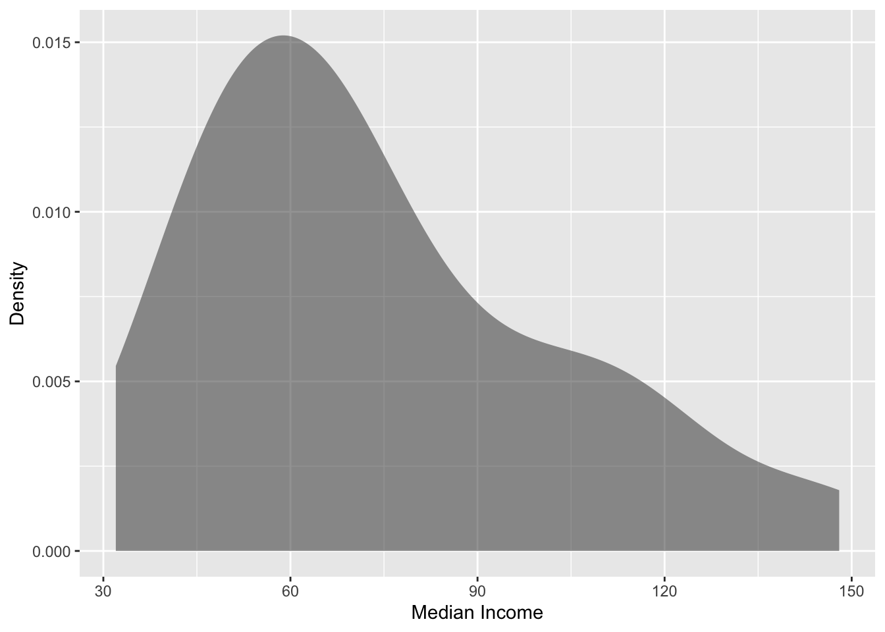
df_stats(~median_income, data = house_income)The median income for the 42 cities in the sample have a right-skewed distribution with a typical city having a median income of close to $70k (median). There is a great deal of variation in the median income across these cities, however, with the median income ranging from $32k to $148k, and the middle 50% of cities having median incomes ranging from $52 to $91k.
# Explore median_house_price
gf_density(
~median_house_price, data = house_income,
xlab = "Median House Price",
ylab = "Density"
)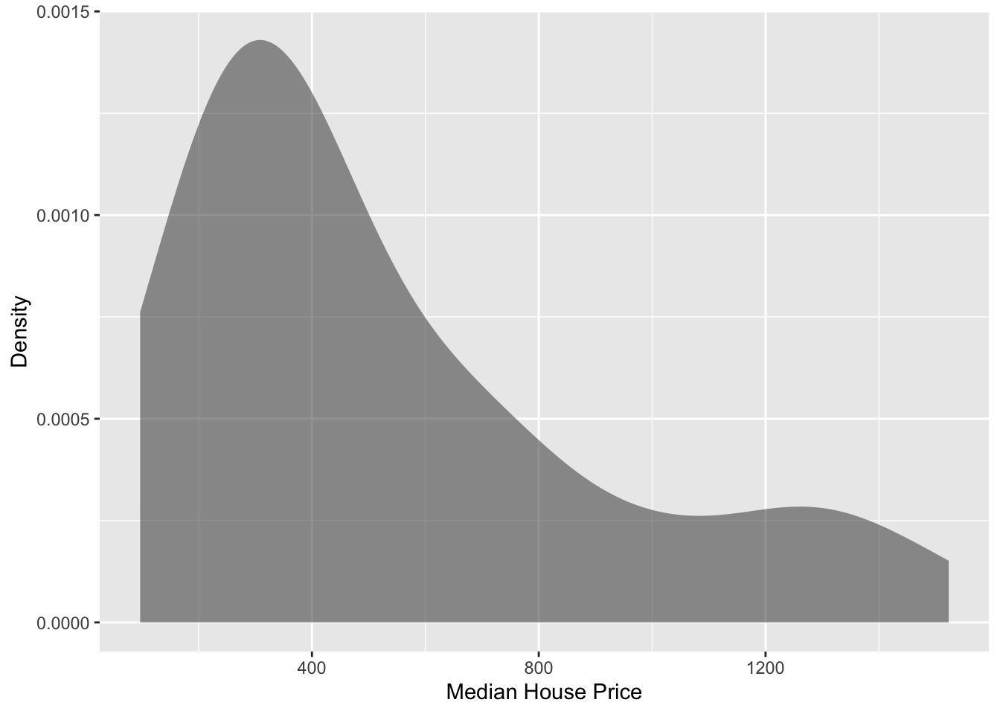
df_stats(~median_house_price, data = house_income)The median house price for the 42 cities in the sample also have a right-skewed distribution with a typical city having a median house price of $394k (median). There is a great deal of variation in the median house prices across these cities, however, with the median house price ranging from $97k to $1.5m, and the middle 50% of cities having median house prices ranging from $271 to $723k.
24.3 Relationship Between Variables
Although examining the distributions of each attribute independently is an important first step, those descriptions do not help us directly answer our research question. To better understand any relationship between income and house prices we need to explore how the distribution of house prices co-varies with the distribution income. To do this, we will create a scatterplot of median income versus median house price.
To create a scatterplot, we will use the gf_point() function from the {ggformula} package. The syntax for this function is similar to the othergf_ functions:
gf_point(y ~ x, data = data_name)
where y is the name of the attribute you want on the y-axis, x is the name of the variable you want on the x-axis, and data_name is the name of your object that you imported your data into. For example, to create a scatterplot in which median house price is on the y-axis, median income is on the x-axis, we can use the following syntax:
gf_point(
median_house_price ~ median_income, data = house_income,
xlab = "Median Income",
ylab = "Median House Price"
)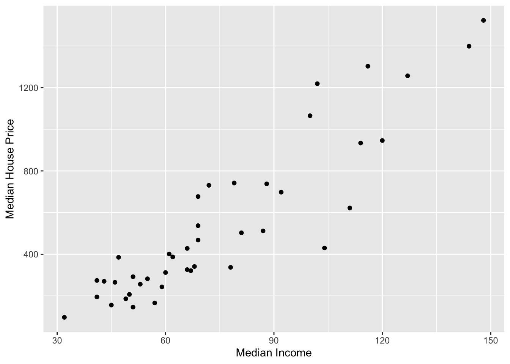
The plot visually shows the relationship (at least for these cities) between median income and median house price. When describing the relationship we want to touch on four characteristics of the relationship:
- Functional form of the relationship
- Direction/Trend
- Magnitude of the line, and
- Strength
24.3.1 Functional Form of the Relationship
A functional form refers to the algebraic (mathematical) description of the relationship between the two attributes included in the relationship. Common functional forms used in the social and educational sciences are linear, quadratic, exponential, and cyclical (e.g., sinusoidal). Figure 24.1 shows examples of these four functional forms.
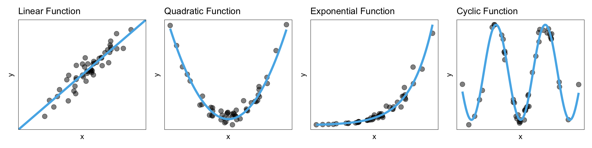
Note that the data in a scatterplot won’t follow these patterns perfectly, but you want to pick out the general form of the function. In our example, the relationship between median house prices and median income seems linear.
24.3.2 Direction/Trend
Once we pick the functional form, the next thing we want to do is identify the direction/trend of the relationship. The direction/trend describes the overall “slope” of the data and can be positive, negative, or flat. Figure 24.2 shows examples of a positive, negative, and flat linear relationship.
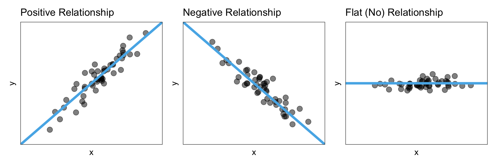
A positive relationship would imply that lower values of x are associated with lower values of y and higher values of x are associated with higher values of y. A negative relationship, on the other hand, would imply that lower values of x are associated with higher values of y and higher values of x are associated with lower values of y. A flat relationship implies there is no relationship between x and y since all values of x are associated with the same y value.
When you describe what the direction/trend implies, be careful about the language you use. For example, we would not want to say “when x goes up, y goes up” when describing a positive relationship. This is because that statement is not true for all of our cases. The trend describes the general pattern in the relationship, which does not apply to all cases. That is why we use the wording “is associated with”, which to other researchers indicates the general pattern. Other ways to describe a positive relationship would be that:
- On average, higher values of x correspond to higher values of y.
- Observations that have higher values of x tend to have higher values of y.
24.3.3 Magnitude
The magnitude of the relationship constitutes a description of the magnitude of change in the y-values for a given change in the x-values. Is an increase in x associated with a small change in the y-values? A big change in the y-values?
To better understand this, consider the three linear relationships in Figure 24.3. All three relationships depicted have a positive relationship; higher values of x are associated with higher values of y. However, the magnitude of change in the y-values is quite different as we increase x in these plots.
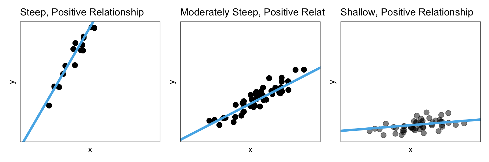
In the left-hand panel, the magnitude of the relationship is quite large. Not only are higher values of x are associated with higher values of y, but those y-values are a lot larger for higher values of x. We can see this in the high degree of steepness of the line.
Compare that to the middle panel where, again, higher values of x are associated with higher values of y, but the magnitude of the change in the y-values is much smaller. That is, the line in the middle panel is less steep. Finally, in the right-hand panel, again, higher values of x are associated with higher values of y, but now the magnitude of change in the y-values is very small. Here, the slope of the line is very shallow.
24.3.4 Strength
The strength of the relationship describes how well the data adhere to the functional form. For example a strong linear relationship would be one in which the observations lie close to the line. Figure 24.4 shows three positive linear relationships, one that has weak, one that is moderate, and one that is strong.
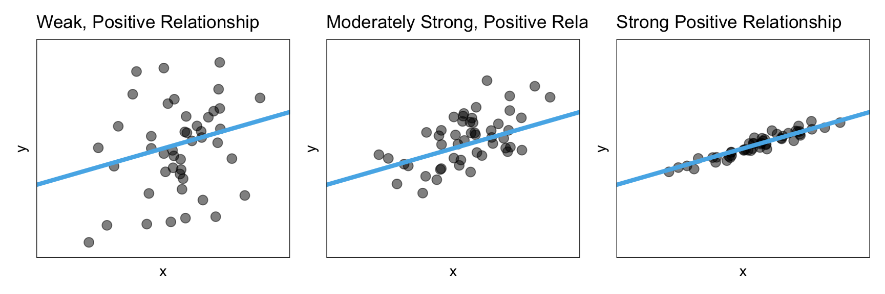
As you describe the strength of a relationship, know that the qualifiers ‘weak’, ‘moderate’, and ‘strong’ are somewhat subjective. For now, use your best judgment.
After positing the functional form, put that line or curve on the scatterplot in your mind. This will help you better consider and describe the strength of the relationship. In a later chapter, we will actually learn how to do this in R.
24.3.5 Back to the Example
Let’s return to the scatterplot showing the relationship between median income and median house prices and use what we have learned to describe that relationship using the context of the data.
gf_point(
median_house_price ~ median_income, data = house_income,
xlab = "Median Income",
ylab = "Median House Price"
)The scatterplot suggests that there is a positive, linear relationship between median income and median house price for the 42 cities in our sample. This suggests that cities that have higher median incomes tend to also have higher median house prices. The magnitude of the relationship seems large as the slope of the relationship seems quite steep, indicating that even small changes in median income is associated with a big change in median house price. This relationship seems pretty strong, with the data clustered pretty close to the line that describes this relationship.
24.4 Plot Scale and Human Perception
One issue that arises when we describe the magnitude and strength of the relationship is that our guesstimate for both the magnitude of the effect and the strength of the relationship can be influenced by the x- and y-scale on our scatterplot. To illustrate this, Figure 24.5 shows the median income and house price data with two different scales on the axes.
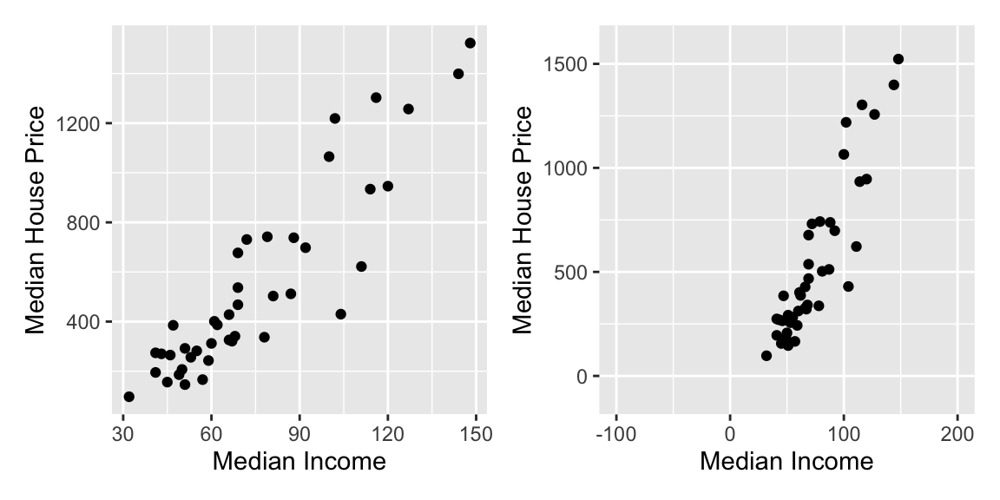
In the right-hand graph of Figure 24.5, we may perceive a stronger relationship than in the left-hand graph. We would also perceive that the magnitude of the effect (i.e., the slope of the linear function) is larger, that is the line looks steeper. This is problematic as the strength of the relationship is exactly the same in both graphs as it is the same data that is plotted.
Because of this, we often compute and report a numerical summary measures to quantify both the strength and the magnitude of the relationship. These measures are useful as they are not impacted by the scale we use to plot the data.
24.5 Correlation: Quantifying the Strength of the Relationship
The correlation coefficient is a numerical summary of the strength of a linear relationship. To compute the correlation coefficient, we will use the cor() function from the {mosaic} package. This function uses syntax similar to many of the other functions you have encountered thus far:
cor(y ~ x, data = data_name)For example, to compute the correlation coefficient between median incomes and median house prices, we use the following syntax:
cor(median_house_price ~ median_income, data = house_income)[1] 0.9080798The order of attributes in the cor() function is irrelevant. For example, you could use the syntax cor(y ~ x, data = data_name) or cor(x ~ y, data = data_name). The reason we suggest using y~x (rather than x~y) is that in fitting regression models, the syntax has to be y~x.
The correlation between median house price and median income is 0.908. Mathematically we use the lower-case letter “r” to indicate a correlation. In our example,
\[ r_{\text{Mdn House Price, Mdn Income}} = 0.908 \]
As we interpret the value of a correlation coefficient, keep in mind the following properties:
- Correlation has no units, it is just a value.
- Correlation coefficients always fall between \(-1\) and \(+1\), that is \(-1 \leq r \leq +1\).
- The sign of the correlation coefficient (positive or negative) indicates the direction of the relationship.
The size of the correlation coefficient gives us an indication of the strength of the relationship. Here are some guidelines to help you think about the strength of the relationship:
- A value of 0 would indicate no relationship.
- Values around \(-0.2\) or \(+0.2\) might indicate a weak linear relationship.
- Values around \(-0.5\) or \(+0.5\) might indicate a moderate linear relationship.
- Values around \(-0.8\) or \(+0.8\) might indicate a strong linear relationship.
- Values of \(-1\) or \(+1\) indicate a perfect linear relationship (super-duper strong).
These guidelines may or may not be useful. You really have to know the substantive literature in your discipline to know for sure what values indicate a strong or weak relationship. For example, in the educational sciences most of the relationships we see with educational outcomes (e.g., GPA, test scores) have correlation values that are less than 0.4. So \(r \approx 0.5\) would be considered a strong relationship.
Returning to our example, the correlation coefficient of 0.908 indicates a strong linear relationship between median income and median house prices. The positive value of the correlation coefficient also indicates that the relationship between median income and median house prices is positive. That is, cities with higher median incomes also tend to have higher median house prices.
24.5.1 Correlation Only Measures a Linear Relationship
It is important to keep in mind that the correlation coefficient is only useful as a measure of the strength of the relationship when the relationship between variables is linear. Here is an example where the correlation coefficient would be misleading about the strength of the relationship.
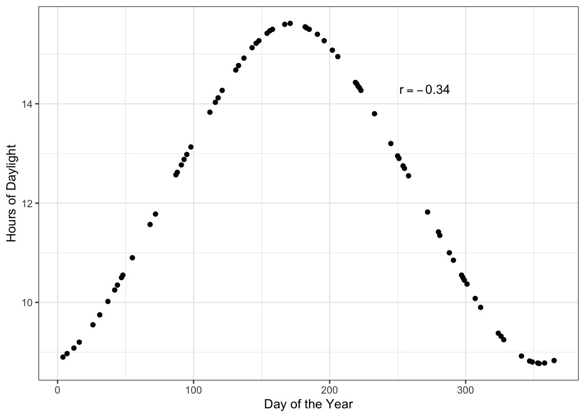
Here there is a perfect relationship between day of the year and hours of daylight. If you fitted a nonlinear model here, your “line” would match the data exactly (no residual error!). But the correlation coefficient does not reflect that. The correlation coefficient would suggest that the relationship between day of the year and hours of daylight is weak (\(r=-0.34\)).
Another situation in which correlation can mislead is when you have subpopulations in your data. Here is an example of that.
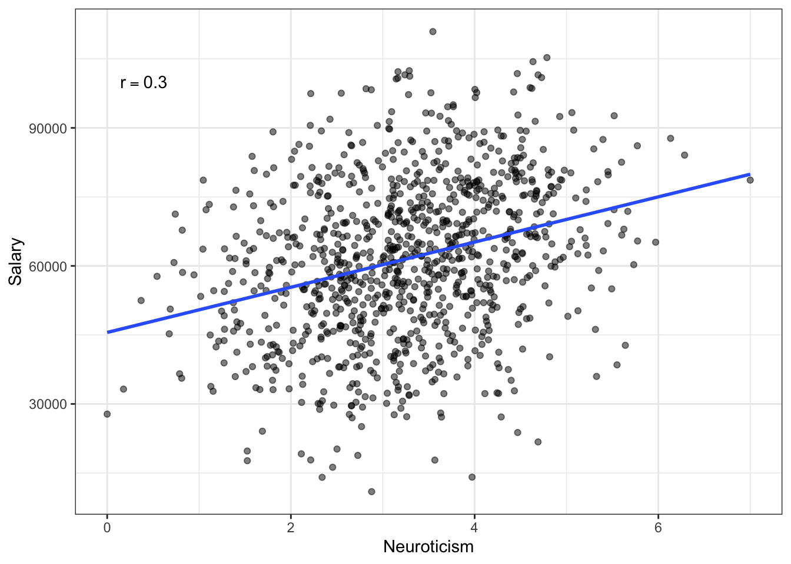
Warning: A numeric `legend.position` argument in `theme()` was deprecated in ggplot2
3.5.0.
ℹ Please use the `legend.position.inside` argument of `theme()` instead.
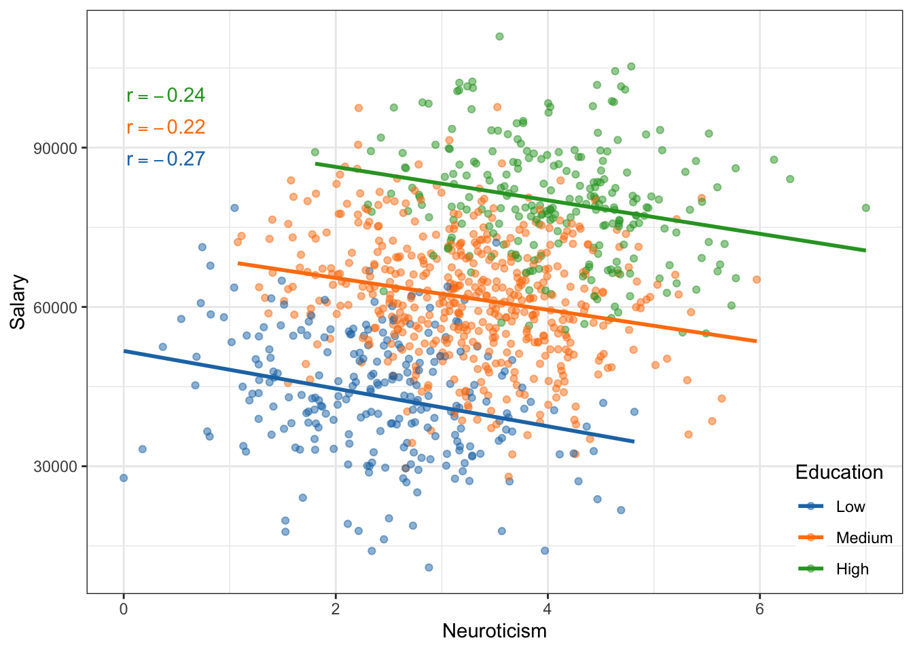
If we treat these data as one population (an assumption for using the correlation) the relationship between neurotocism and salary is positive; employees who are more neurotic tend to have higher salaries, on average. However, if we account for education level, the relationship between neurotocism and salary is negative for each of the education levels; once we account for education level, employees who are more neurotic tend to have lower salaries, on average. This reversal of the direction of the relationship once we account for other variables is quite common (so common it has a name, Simpson’s Paradox) and makes it difficult to be sure about the “true” relationship between variables in observational data.
You should always create a scatterplot to examine the relationship graphically before computing a correlation coefficient to numerically summarize it.